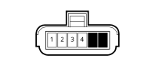

N040 Fuel pump and level gauge(REAR)
- Path
- Electrical equipment > Connectors > N Electric motors and actuators > N040 Fuel pump and level gauge > N040 Fuel pump and level gauge(REAR)
- Kind
- connector pinout (pin -> wire colour -> other end)
- Applies to
- engines: 2.0 TB, 2.4 20V, 3.0 V6, 2.4 JTD 10V; all production periods
- Interactive page
- https://sloeber94.github.io/elrnDB-lThss/en/#/28006430
Applies to: engines: 2.4 20V; all production periods

Wiring | Colour |
|---|---|
25 REAR |
Applies to: engines: 2.0 TB; all production periods
Wiring | Colour |
|---|---|
25 REAR |
Applies to: engines: 2.4 JTD 10V; all production periods
Wiring | Colour |
|---|---|
25 REAR |
Applies to: engines: 3.0 V6; all production periods
Wiring | Colour |
|---|---|
25 REAR |